Meet Our Team
Passionate educators and developers building the future of computer science education.
Our Team
Board of Directors
Benjamin Standefer
Co-Founder
Benjamin is a junior at St. Mark's School of Texas. He founded BinaryTree because of his love of programming and his desire to change the world for the better. Outside of service projects and science fairs, he enjoys reading and rowing.
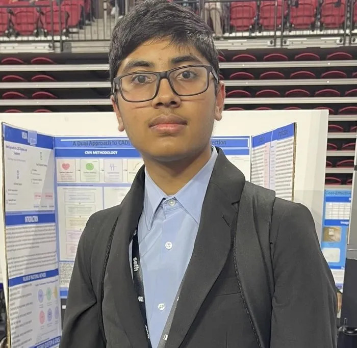
Keshav Balakrishna
Co-Founder
Keshav is currently a junior in Jordan High School in Texas with a strong passion in Computer Science & Math. He enjoys programming in his free time and competed in coding-related contests such as USACO. Along with Benjamin, he co-founded BinaryTree in order to teach others and share the joy of programming to the underprivileged. Outside of programming, he also enjoys listening to rap/hip-hop(such as Central Cee & 21 Savage) & playing soccer with friends.
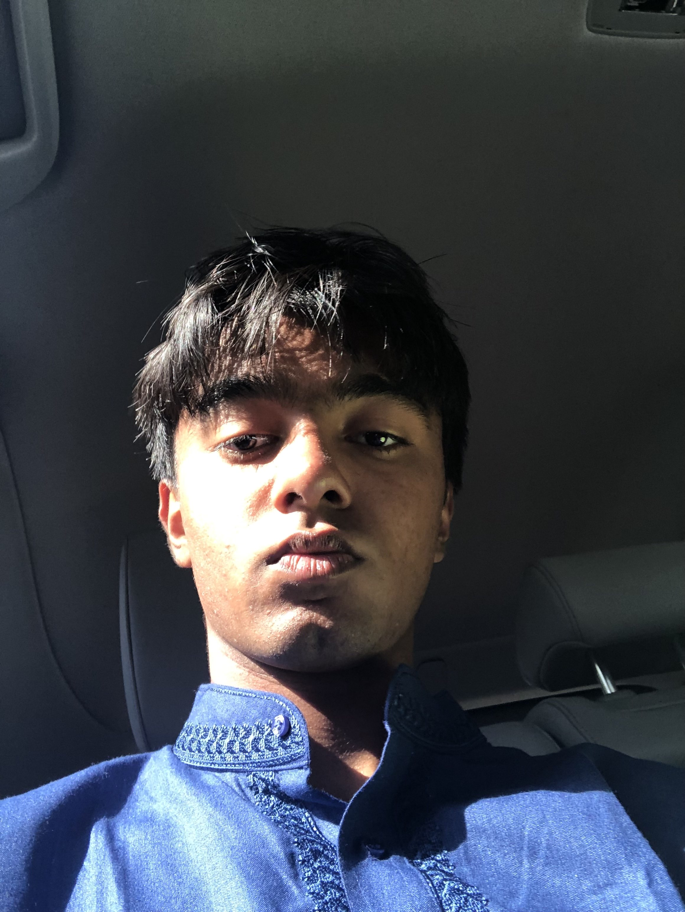
Rivesh Rauniyar
National Director
Rivesh is currently a freshman at Rickards High School. Rivesh is strongly passionate about STEM especially programming, biology, and math. Rivesh joined BinaryTree along aside the founders to share his passion about programming and our mission to share the gift of computational education.
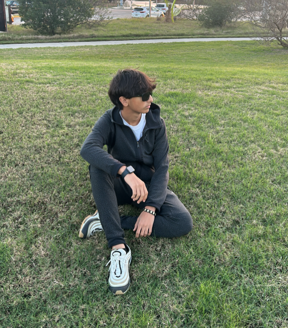
Moemal Al-Wishah
National Director
Formerly known as Mo, my full name is Moemal Al-Wishah, a 10th grader at Jordan High School, located at Texas. I am one of the regional directors of Texas, and one of the national directors for the United States of America. My underlying motivation for aiding to create this non-profit with the former founder (Keshav Balakrishna) was to give underprivileged children a chance to better the world as I believe that everyone should have an equal opportunity and access to education and peace.
Leadership
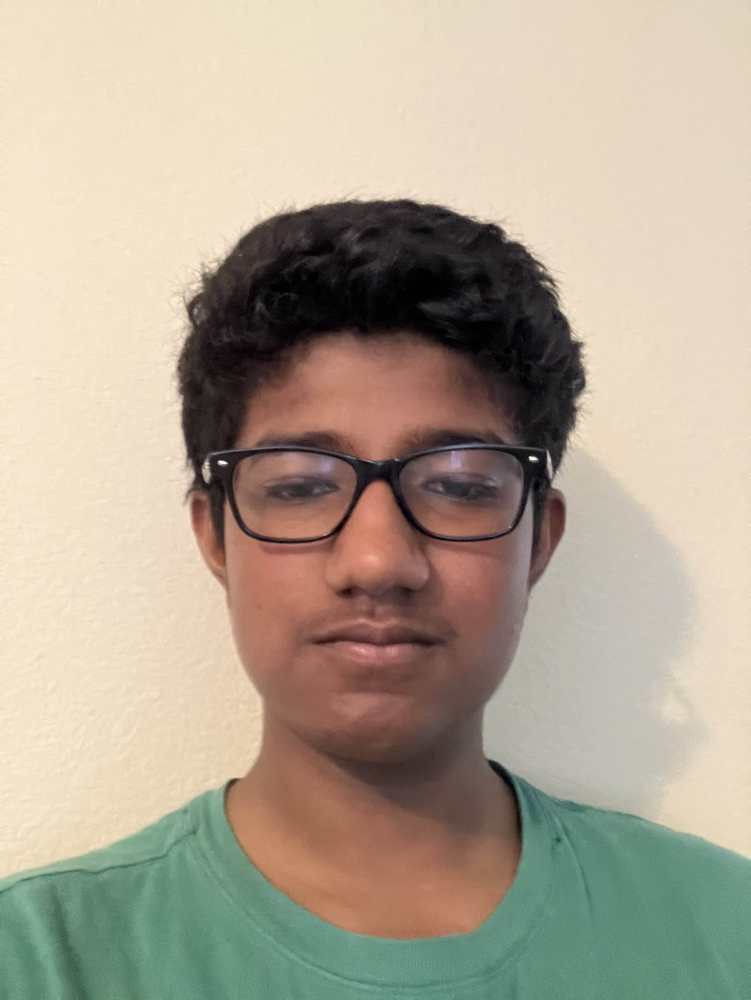
Saicharan Mudium
North Carolina State Director
Hi, I’m the regional director of North Carolina. I am a sophomore in High school and have a passion for math, programming, and most importantly, helping others.
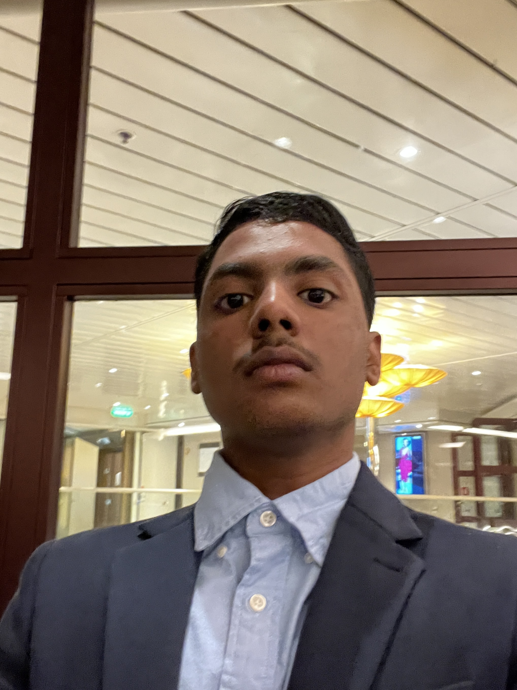
Atul Shine
California State Director
Hi, I’m Atul Shine, an 11th-grader at EVHS and the California Director. I’m passionate about technology, education, martial arts, and community building, which is why I dedicate myself to creating opportunities for others to learn and grow. As a leader in various initiatives, from teaching my courses in AI and Python to building drones(for which I am currently making obstacle detection software), I believe in the power of innovation to solve real-world problems. I have experience with HTML, SQL, CSS, R, Java, Python, Javascript, and a bit of C. My goal is to inspire and uplift others and make sure that everyone has the tools they need to succeed and thrive.
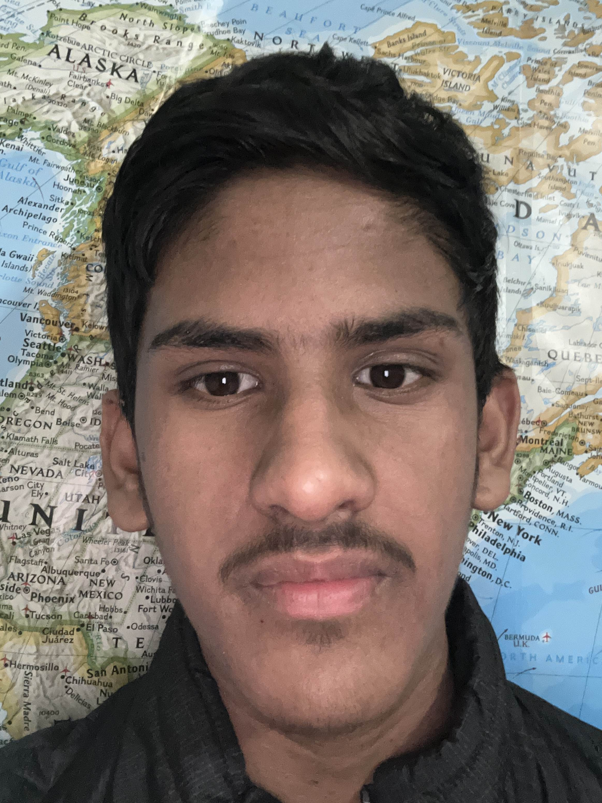
Arnav Rohilla
Colorado State Director
I am Arnav Rohilla, an eighth grader at campus middle school, and the regional director of Colorado. I joined because I love to help people and I like STEM.
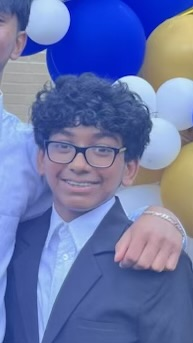
Amogh Sheth
Technicals Lead
Amogh is a freshman at Edison Academy Magnet School. He is deeply passionate about programming and yearns to make a positive impact on the world.
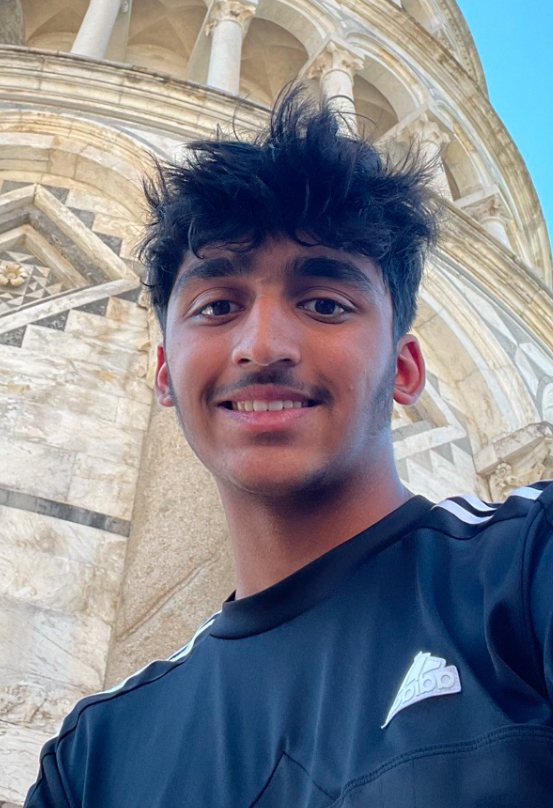
Ibrahim Adil
Social Media Lead
I am Ibrahim Adil, an 11th grader at WA, Inglemoor Highschool, and the leader of the social media campaign at Binary Tree. My motivation for joining this cause is that I believe everyone should be aware of the lack of development in 3rd world countries and educated on that, providing them with resources and a good education.
Member List
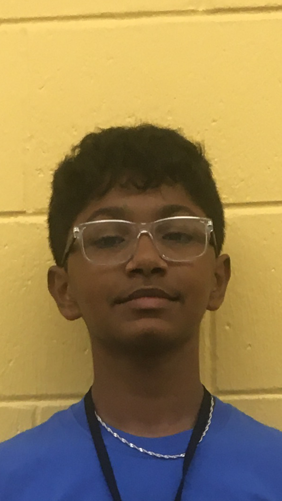
Sanjay Rameshkrishnan
Educator
Sanjay is currently in the 8th grade at Sanford Middle School. He is interested in math, physics, and programming, mainly in C++. He aims to create a positive impact on the world by sharing his knowledge and passion of STEM.
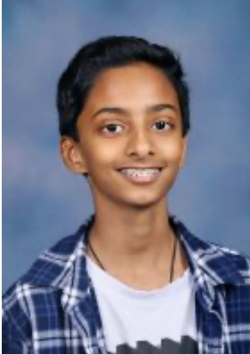
Yug Umasudhan
Web Dev
Yug Umasudhan is a 8th grader a Sanford middle School. He is passionate about engineering and machine learning and would like to develop the near future by helping other with his experiences
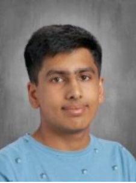
Umair Shaheen
Social Media Team
Umair is a current Junior at Evergeen Valley High School and is part of the social media team here at BinaryTree, working to engage members by posting on the more professional page on the official Binary Tree LinkedIn page. He is greatly passionate about engineering, specifically in computer science and aerospace. In his free time, he loves to play and watch sports such as football, basketball, tennis, as well as Formula 1/NASCAR racing.
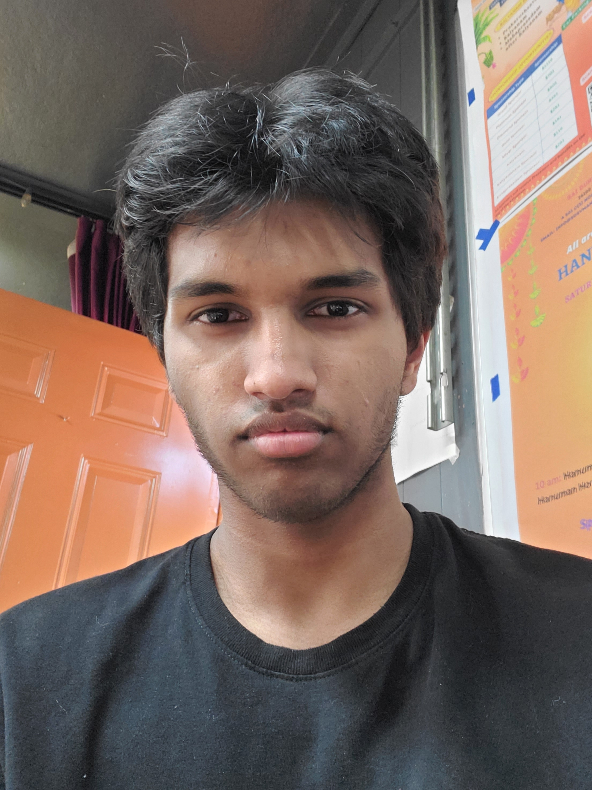
Aaryan Raju Chityala
Social Media Team
Hi! My name is Aaryan, and I am grateful for working at Binary Tree. I love electrical and computer engineeering with medicine, and will be majoring in ECE and Biochem in the upcoming school year. I love cricket, astronomy, chess, history/geography, finance, and volunteering.
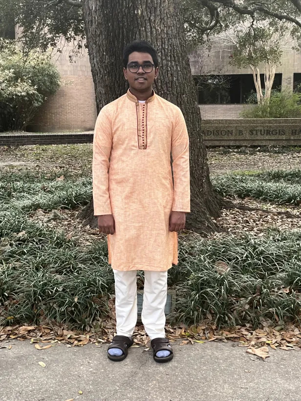
Aditya Baisakh
Educator
Aditya is a current senior at Baton Rouge Magnet High School with a strong passion for STEM and helping others. As an educator at BinaryTree, he helps develop curriculum materials and deliver engaging class lectures and discussions with students from our partner outreach organizations. In his free time, he likes to play the piano, listen to music, and practice martial arts.
Join Our Team
Passionate about computer science education? We'd love to hear from you!
Apply Now